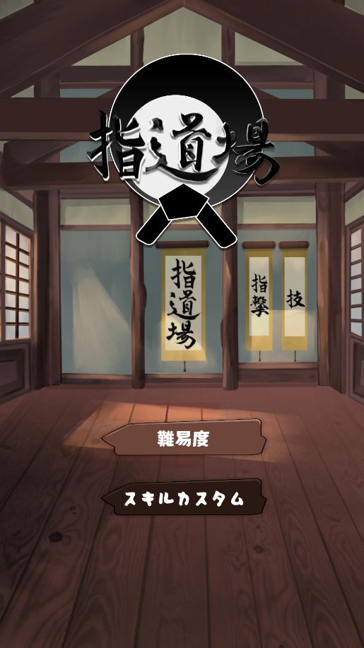
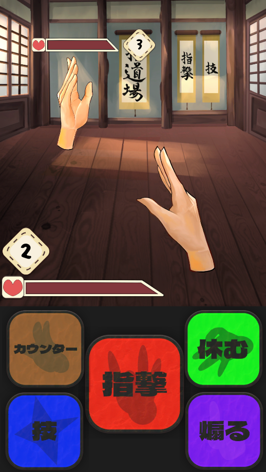
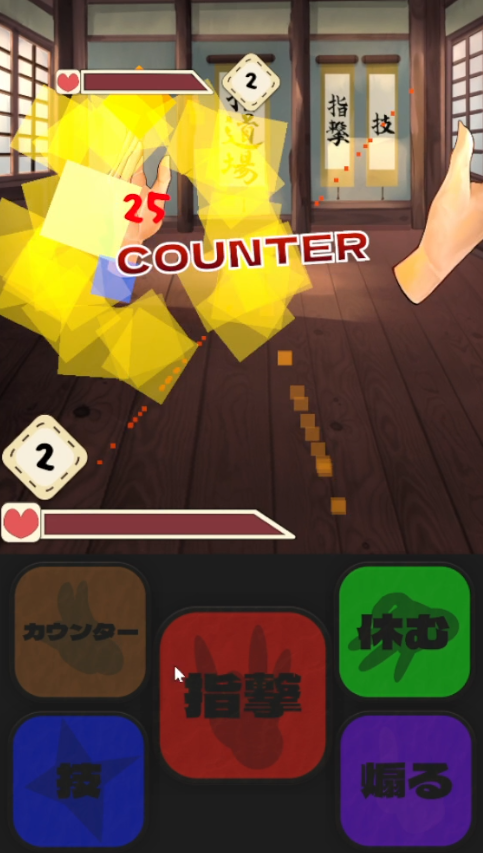
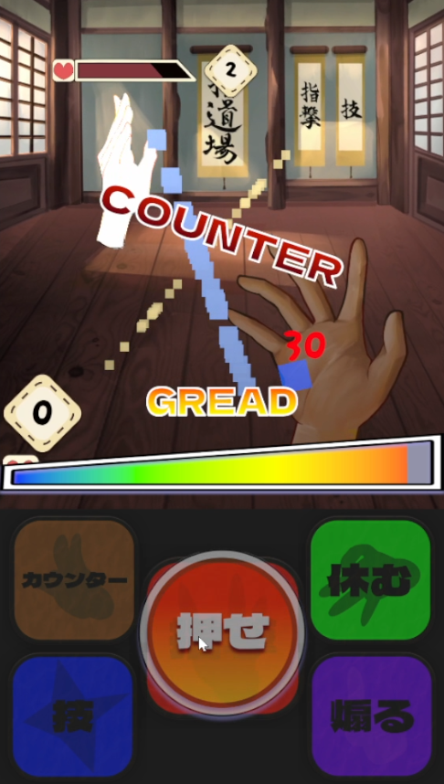
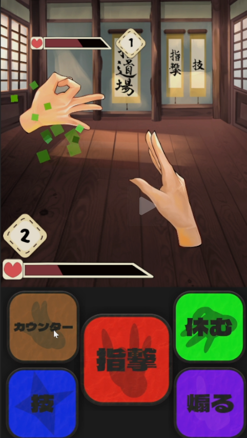

タイミング入力型
1対1バトル
指道場（FingerDojo）
Unity製の1対1タイミングバトル。敵の攻撃に合わせるカウンター、タイミングQTEによる指撃、HPを回復する休息を使い分けます。現在は試作段階です。
作品の要点
担当
チーム開発で、清水日向多がゲーム企画・実装を担当。岩見ほのかさんが全てのデザインを担当しました。
設計上の課題
指撃QTE、カウンター、休息を個別の戦闘状態として扱い、敵の行動やダメージ処理と連携させること。
実装した工夫
プレイヤーと敵の状態・HPを分け、Command、StateController、CombatCalculatorを通じて入力から戦闘結果を処理します。
ゲーム概要
道場を舞台に、手のキャラクター同士が戦うタイミング入力型の1対1バトルです。敵の攻撃をカウンターし、指撃QTEで反撃しながらHPを削り、勝利を目指します。
プレイの基本ループ
- タイトル画面で敵の難易度を選び、BattleSceneへ進む。
- 指撃・カウンター・休息を使い分け、敵の攻撃や回復に対応する。
- どちらかのHPが0になると、勝敗画面を表示する。
コマンドと戦闘システム
以下はGitHubの現状資料と、ページに掲載しているスクリーンショットで確認できる内容です。実行時の操作感や演出の再生はUnity Editorで未検証です。


指撃
- 指撃ボタンで攻撃を開始し、QTE中に画面を押してタイミングを入力。
- バー位置を x として、ダメージは「PlayerStrength × (0.5 + 2x)」。
- Bad / Good / Great / Perfectを表示。ダメージ倍率は判定名ではなくバー位置で計算。

カウンター
- 入力後0.5秒間、カウンター状態になる。
- 受付中に敵の攻撃を受けると、被ダメージを無効化して反撃。
- 反撃ダメージはPlayerStrengthの25%。

Break（自動発生）
- プレイヤーが選択するコマンドではなく、被弾条件で発生する状態。
- 敵がCounter状態のときに2回被弾するとBreakへ移行。
- Break中は3秒間コマンドが無効。
休む
- 2秒かけて最大100HPを回復。
- 回復中は無防備で、敵の攻撃を受けると中断。
- 実装上、Playerのコマンドボタンは休息中に無効化される。

敵の回復（敵AI）
- 敵AIが難易度ProfileとHPに応じて選択する行動。
- 難易度により、回復を選ぶHP条件が異なる。
- 回復中にダメージを受けると回復が中断される。
未実装のコマンド
タイトル画面・戦闘画面に「技」「煽る」のUIはありますが、GitHubの実装状況資料ではプレイヤー側コマンド処理は未実装です。
技術構成・実装
UnityのScene上のGameObjectとMonoBehaviourを中心に構成。タイトルで選んだ敵ProfileをBattleSceneへ渡し、コマンド入力から状態遷移、QTE・ダメージ処理、HP/UI更新、勝敗表示へつなぐ設計です。
戦闘の処理経路
- 難易度を選ぶDifficultyButtonが選択Profileを確認し、BattleSceneへ進む
- コマンドを入力Unity UI ButtonからCommandを実行し、StateControllerが状態を管理
- 判定・ダメージ指撃QTEや敵攻撃のAnimationEventからCombatCalculatorへ倍率を渡す
- 結果を反映HealthがHPを更新し、GameManagerとGameUIManagerが勝敗を表示
主なクラスとデータ
- PlayerStateController / EnemyStateController: プレイヤー・敵それぞれの戦闘状態を管理。
- EnemyDecisionController: 敵AIの行動と戦闘中の履歴を管理。
- PlayerDataSO / EnemyProfileSO: ScriptableObjectでプレイヤー値と難易度別の敵パラメータを保持。
- TimingBarController / CommandTimingQTE: バー表示、ポインター入力、タイミング倍率・判定表示を担当。
ゲーム内には技・煽りのボタン名や状態名が残っていますが、該当するプレイヤーコマンド処理は未実装です。Unity EditorでのPlay Mode、シーン参照、AnimationEvent、実際の操作感・バランスもドキュメント上は未検証とされています。
技術基盤はUnity 6000.0.51f1、URP 17.0.4、Input System 1.14.0、Cinemachine 3.1.4です。戦闘入力の説明はUIボタンを中心としており、Input Actions資産があることだけからキーボード操作を断定していません。
紹介動画
プロジェクト情報
- ジャンル: タイミング入力型・1対1バトル
- 開発体制: チーム開発
- 担当: ゲーム企画・実装: 清水日向多 / 全てのデザイン: 岩見ほのか
- 使用技術: Unity 6000.0.51f1 / Universal Render Pipeline 17.0.4 / Input System 1.14.0 / Cinemachine 3.1.4 / C#